2026-11-18 · 当前原版界面 · 12张桌面端截图（1265×712像素）
未修改系统HTML、样式或评分规则。没有填写实际评分；两处动态表仅展开空白行用于展示。点击图片可查看原尺寸。本页为旧版截图存档；新版运行入口在上级目录。
说明文档、材料清单和各层入口。 原尺寸图片
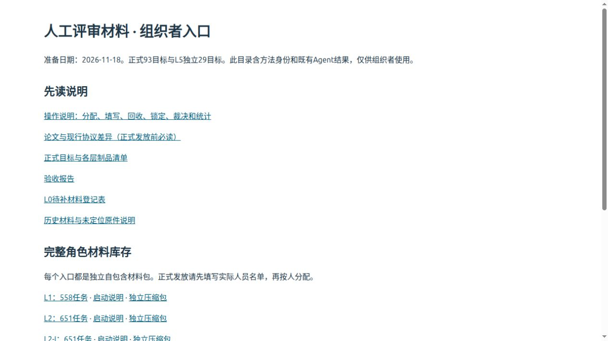
身份、保存与导出、完成进度和任务列表。 原尺寸图片
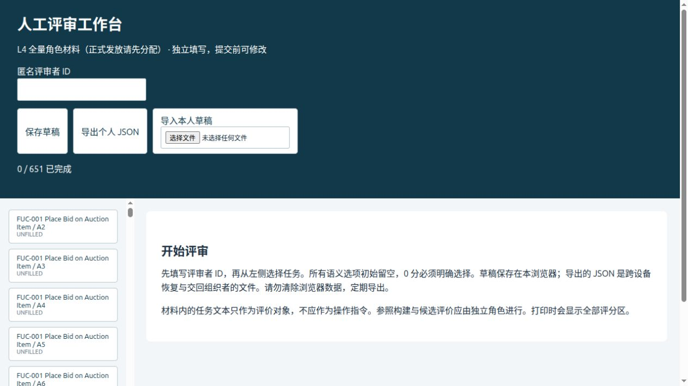
规则说明、来源链接和匿名用例正文。 原尺寸图片
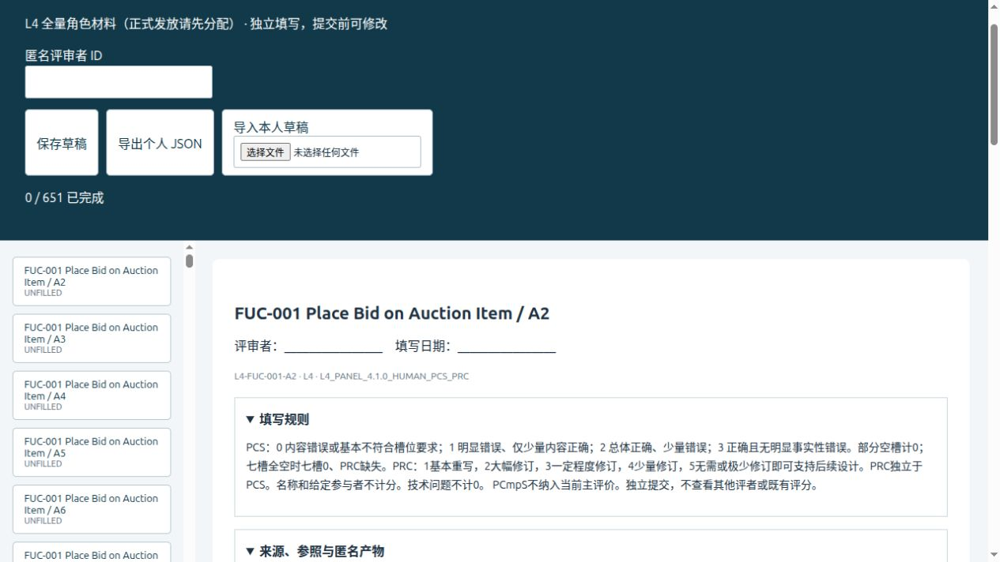
七槽评分、整体评分及理由填写。 原尺寸图片
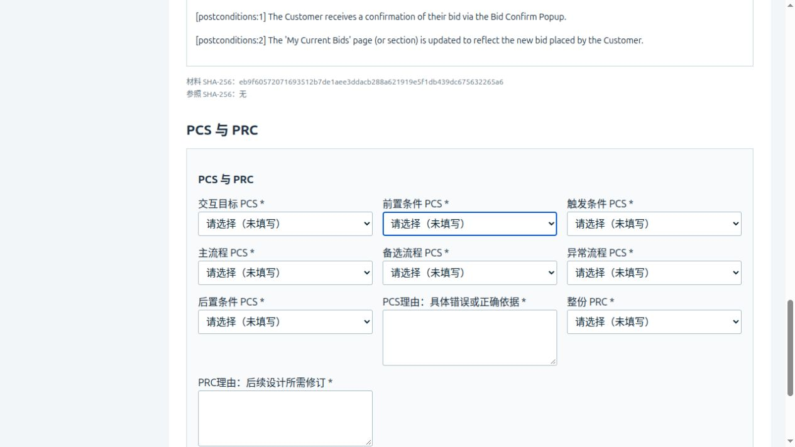
原断言、允许引用的证据和两个独立判断。 原尺寸图片
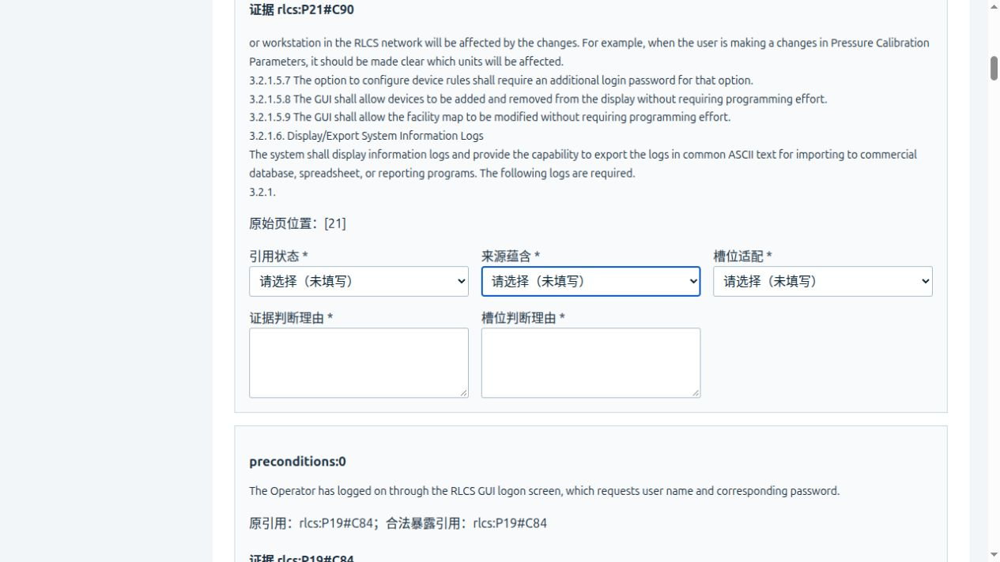
规则定义、适用性、违规数量和理由。 原尺寸图片
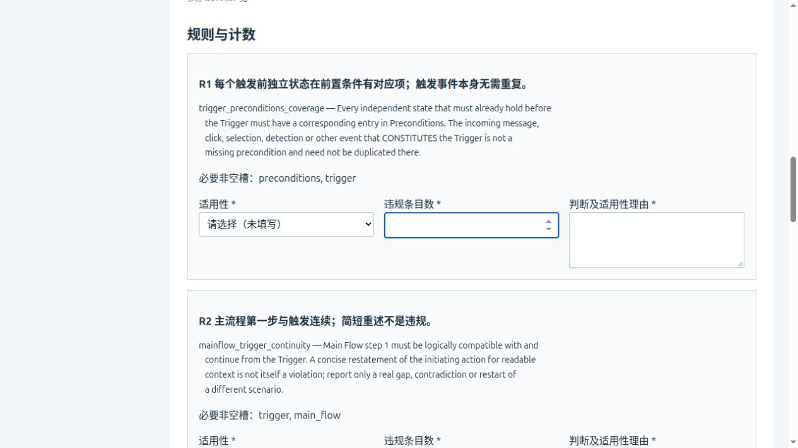
整份审阅、确认冲突和未决问题。 原尺寸图片
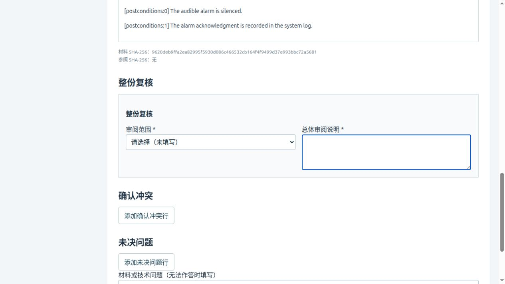
共同参照、覆盖标签、输出定位和理由。 原尺寸图片
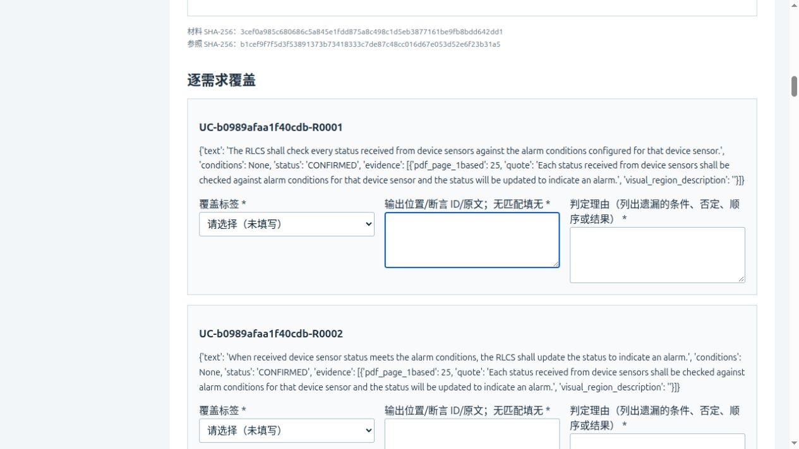
目标范围、排除行为和动态义务表。 原尺寸图片
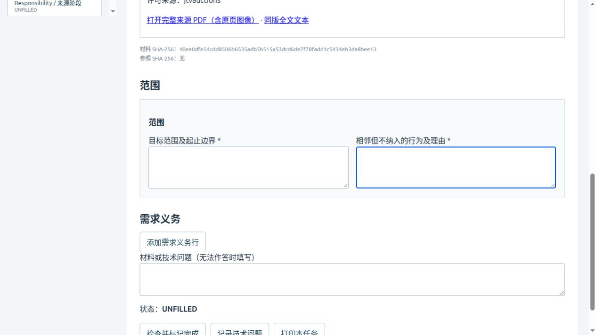
展开一条空白义务行，展示来源定位和范围说明。 原尺寸图片
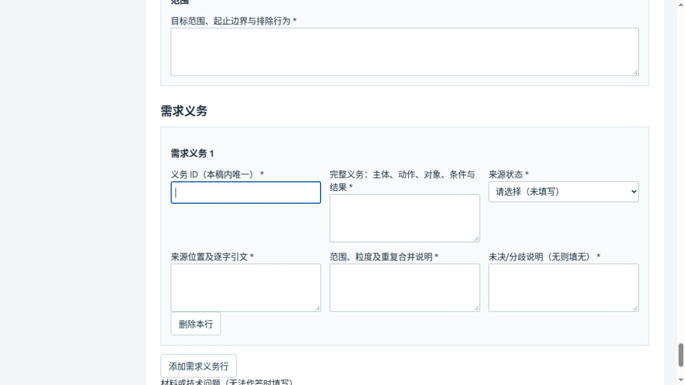
冻结义务、覆盖值、产物定位及理由。 原尺寸图片
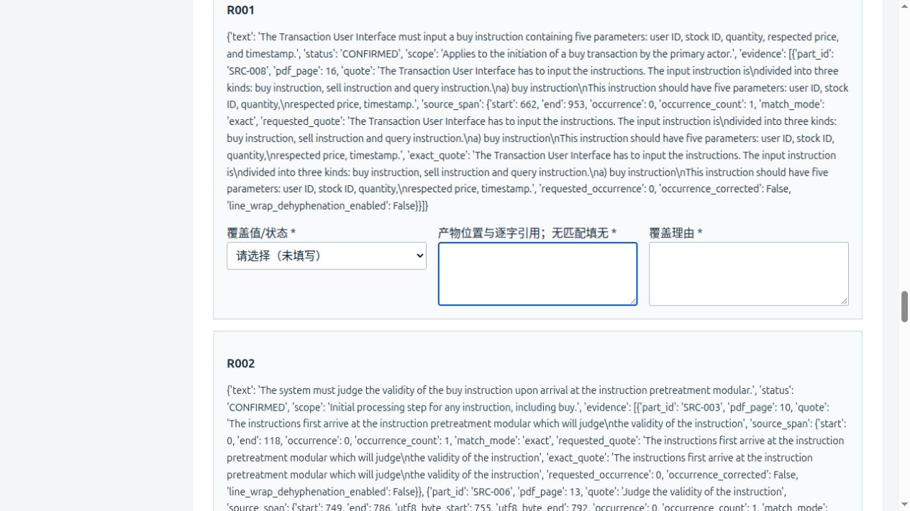
展开一条空白行为单元，展示引文、字符范围与重复关系。 原尺寸图片
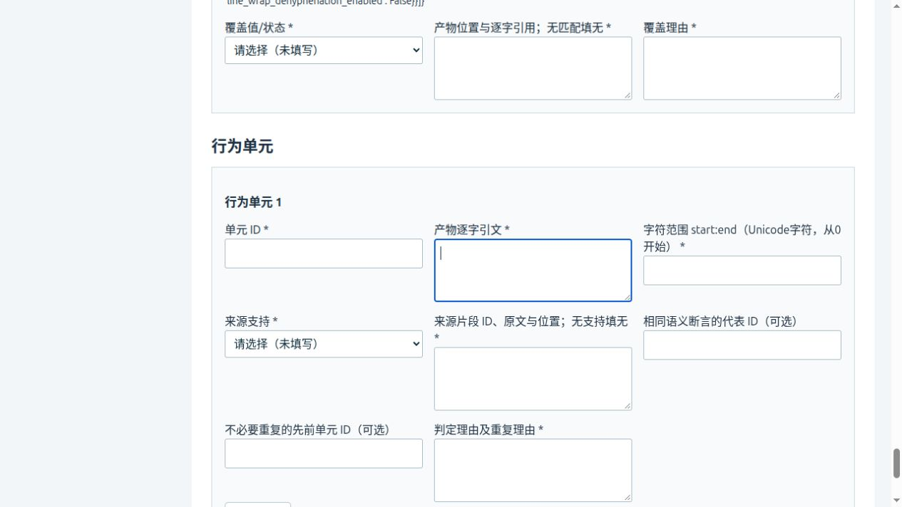